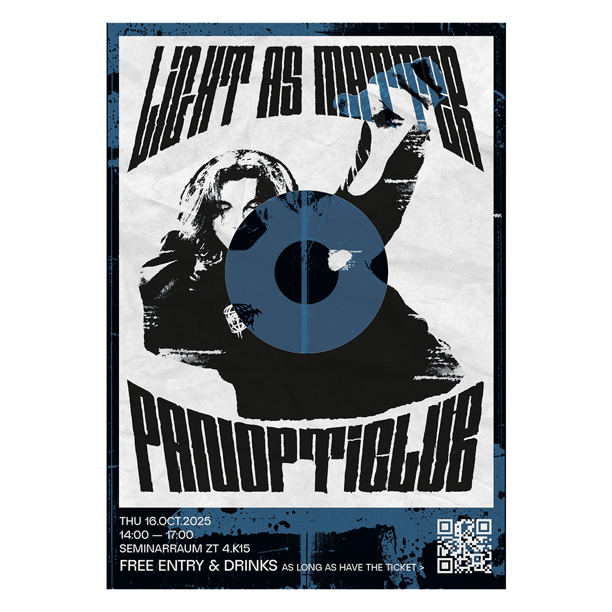

Panopticlub
Graphic Design (2025)
This poster was designed as an invitation flyer to an experimental performance I partook in. This project, named Panopticlub, draws obvious inciration from the Panopticon, and a club-like settings. In this performance, users were invited to dance freely and let loose in the dark ambience of the club. At random intervals, a beacon of light would be cast upond a random participants, pointing everyone's attention to them. Through this setting, the project aimed to explore the concept of privacy and public behaviour.

